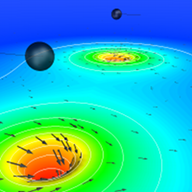
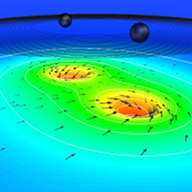
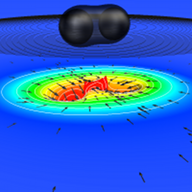
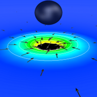

Introduction
The Spectral Einstein Code (SpEC) is a flexible infrastructure for solving partial differential equations using multi-domain spectral methods. While SpEC was primarily designed for fully general-relativistic compact object simulations, it can be applied to a wide range of hyperbolic and elliptic equations. Some of its features are:
- A flexible domain decomposition supporting individual subdomains (cells, elements) of various topologies, e.g. blocks, spheres, cylinders, and any combination thereof. Subdomains can touch or overlap.
- Solves hyperbolic and elliptic PDEs.
- Interfaces to the visualization software ParaView and VisIt.




SpEC simulation of inspiral and merger of two black holes
The main application area of SpEC lies in simulating compact binary objects. Specifically, it is one of the most accurate and efficient codes to compute the gravitational waveforms for inspiraling and coalescing binary black holes.
Contributors
SpEC was originally developed by Lawrence Kidder, Harald Pfeiffer, and Mark Scheel, who remain the principal maintainers of the code. Since then, many further individuals have contributed to SpEC. Most especially, Matthew Duez and Francois Foucart have developed the hydrodynamics module; Béla Szilágyi and Dan Hemberger have made numerous valuable additions throughout the code; and Lee Lindblom has contributed significantly to the algorithms used in SpEC.
The following researchers have substantially contributed to SpEC: Andy Bohn, Michael Boyle, Luisa Buchman, M. Brett Deaton, Nils Deppe, Roland Haas, Francois Hebert, Kate Henriksson, Stephen Lau, Geoffrey Lovelace, Curran Muhlberger, Sergei Ossokine, Rob Owen, Saul Teukolsky, and Will Throwe.
Further contributions to SpEC were made by Kevin Barkett, Thomas Baumgarte, Jonathan Blackman, Wyatt Brege, Jeandrew Brink, Tony Chu, Michael Cohen, Gregory Cook, Matt Giesler, Jason Grigsby, Casey Handmer, Frank Herrmann, Ian Hinder, Jeff Kaplan, Prayush Kumar, Adam Lewis, François Limousin, Jonas Lippuner, Keith Matthews, Abdul Mroué, Lydia Nevin, Maria Okounkova, David Radice, Oliver Rinne, Olivier Sarbach, Deirdre Shoemaker, Leo C. Stein, Nick Tacik, Nick Taylor, Manuel Tiglio, Anil Zenginoglu, Fan Zhang, and Aaron Zimmerman.
Finally, we thank the following undergraduate students for assisting with visualization and running simulations with SpEC: Nousha Afshari, Aliya Babul, Adam Bartnik, Deshpreet Bedi, Patrick Calhoun, Cameron Cogburn, Nick Demos, Patrick Fraser, Alyssa Garcia, Bryant Garcia, Daniel Jones, Haroon Khan, Dave Kotfis, Yor Limkumnerd, Ian MacCormack, Tamin Mansour, Robert McGehee, Dmitry Meyerson, Adam Neumann, Amin Nikbin, Hiroaki Oyaizu, Daniel Parada, Jennifer Seiler, Haolin Shi, Keara Soloway, Alexandre Streicher, and Allen Sussman.
Publications
These publications have made use of SpEC:
External Software
SpEC benefits from the years of work put into the following general-purpose scientific software packages:
- PETSc: Parallel linear and nonlinear equation solvers
- SPHEREPACK: Spherical harmonic transforms
- FFTW: Fast Fourier transforms
- DFFTPACK: Double-precision fast Fourier transforms
- GNU Scientific Library: Mathematical routines for scientific applications
- Numerical Recipes: Numerical routines for scientific computing